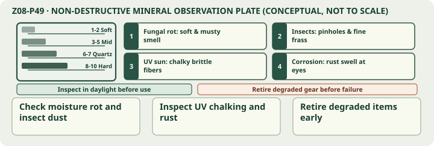

Z08-P49 · Rocks, minerals and materials · New manuscript
Biological, Chemical and UV Degradation of Natural Materials
Identify early rot, insect boring, chemical corrosion, and sunlight degradation across wood, bark, fiber, and field gear.
When it applies · Inspecting cached camp materials, natural craft items, and field tools.
Equipment · Visual and gentle flex check in daylight.

Actions
- Inspect natural wood and fibers for fine beetle frass powder, dark fungal staining, soft spongy areas, and sour mildew odors indicating structural loss.[R15, R18]
- Check metal-to-wood joints and salt-exposed gear for rust pitting and swelling wood that splits handles.[R15, K09]
- Store serviceable field tools dry, clean, and shaded from direct sunlight, retiring visibly degraded natural or synthetic parts before trips.[R15, R18, K08]
Failure recognition · Overlooking tiny beetle holes or sun-bleached cordage causes sudden handle or strap failure mid-task.[R15, R18]
Verify · Pre-trip inspection confirms dry, sound, uncracked wood, intact cordage, and rust-free metal fittings.[R15, R18, K08]
Stop or change course · Stop using any tool handle, pole, or cordage exhibiting soft rot, insect frass, deep rust pitting, or brittle snapping.[R15, R18, K09]
Evidence and editorial notes
- K08 · OSHA · Hand and Power Tools (OSHA 3080) (agency PDF)
- Section: Personal Protective Equipment and Work Area Control · Conditions: Cutting, splitting, striking and rigging operations
Support: Maintain stable footing, eye and hand protection appropriate to flying chips or snapped cordage, and clear bystanders outside the swing or snap-back zone.
Limitations: Field kits often lack shop PPE, requiring slower conservative technique and lower-energy methods. · Conflicting evidence: None; drives snap-back and work-circle exclusion zones in Z09.
Editorial note: Enforces conservative work circles and snap-back clearance. · Specialist reviewer: Tool safety and occupational safety
Primary source · checked 2026-11-24 - K09 · USDA Forest Service · Handtools for Trail Work (0523-2810-MTDC) (agency handbook)
- Section: Cordage, Anchors and Rigging Boundaries · Conditions: Non-life-safety camp lashing, tarps, haul lines and tie-downs
Support: Cordage strength drops significantly at knots, sharp bends, wet fibers, UV exposure and abrasion; inspect fibers before loading and never use unrated camp cord or improvised bindings for life-safety suspension or climbing.
Limitations: No universal breaking strength applies to natural plant fibers or weathered salvaged rope. · Conflicting evidence: Counters folklore claims equating improvised cordage to rated climbing rope.
Editorial note: Separates camp utility lashing/hauling from life-safety rigging. · Specialist reviewer: Rigging safety and materials mechanics
Primary source · checked 2026-11-24 - R15 · Minnesota DNR · Native Trees of Minnesota Identification Reference (Current web edition)
- Section: Regional wood species, grain, bark, and moisture variability · Conditions: Dead downed wood and natural bast fibers in Upper Midwest forests
Support: Wood density, grain straightness, resin content, and decay state vary widely by species, tree part, and moisture history.
Limitations: Visual grain inspection cannot certify structural load capacity; avoid cutting live trees where prohibited and reject punky or cracked wood. · Conflicting evidence: None noted.
Editorial note: Reconciles B007 wood notes with material limits. · Specialist reviewer: Forestry and wood-science specialist
Primary source · checked 2026-11-25 - R18 · Minnesota DNR · Minnesota Native Plant Communities and Biomes (Current web edition)
- Section: Natural plant fiber harvest limits and conservation ethics · Conditions: Bast fibers, rushes, sedges, and woody stems in regional biomes
Support: Harvesting fibrous plants without landowner permission or in protected native plant communities damages ecosystems and may violate law.
Limitations: Strength of hand-twisted plant cordage varies sharply with retting, moisture, and knots; never assign life-safety loads. · Conflicting evidence: None noted.
Editorial note: Connects Z08 fibers to Z09 load limits and law. · Specialist reviewer: Botanist and materials specialist
Primary source · checked 2026-11-25
Source lineage · New manuscript (Z08 P16 material degradation) · Classification · New manuscript.